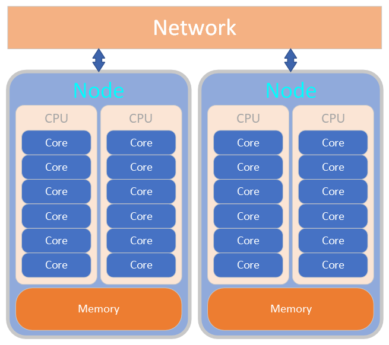
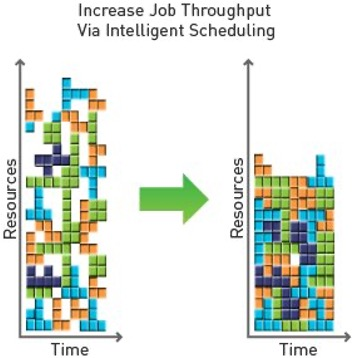
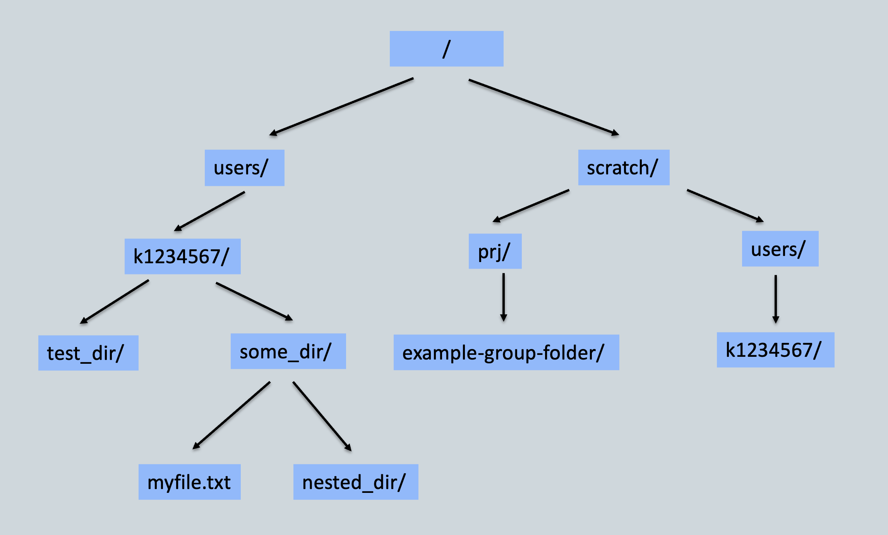

<!doctype html>
<html lang="en">

	<head>
		<meta charset="utf-8">

		<title>High Performance Computing for Digital Humanities</title>

		<meta name="description" content="High Performance Computing for Digital Humanities">
		<meta name="author" content="KCL e-Research / UoM Research IT">

		<meta name="apple-mobile-web-app-capable" content="yes">
		<meta name="apple-mobile-web-app-status-bar-style" content="black-translucent">

		<meta name="viewport" content="width=device-width, initial-scale=1.0">

		<link rel="stylesheet" href="https://UoMResearchIT.github.io/High-Performance-Computing-for-Digital-Humanities//reveal.js/dist/reset.css">
		<link rel="stylesheet" href="https://UoMResearchIT.github.io/High-Performance-Computing-for-Digital-Humanities//reveal.js/dist/reveal.css">
		<link rel="stylesheet" href="https://UoMResearchIT.github.io/High-Performance-Computing-for-Digital-Humanities//reveal.js/dist/theme/white.css" id="theme">

		<!-- Theme used for syntax highlighting of code -->
		<link rel="stylesheet" href="https://UoMResearchIT.github.io/High-Performance-Computing-for-Digital-Humanities//reveal.js/plugin/highlight/monokai.css">
	</head>

	<body>

		<div class="reveal">

			<!-- Any section element inside of this container is displayed as a slide -->
			<div class="slides">
                <section data-markdown
                        data-separator="^\n---\n$"
                        data-separator-vertical="^\n--\n$"
                        data-notes="^Note:">
                    <script type="text/template">
                        # Introduction to High Performance Computing

---

## Welcome!

<small>

This workshop is an introduction to using High Performance Computing (HPC) systems and is intended to give a basic overview of the tools available and how to use them.

By the end of the training, you should be able to:

* Connect to HPC
* Manage your files and programs
* Use modules to find and load the necessary software
* Submit jobs to the queue and check the results of submitted jobs

The training material and slides are available online, so you don't need to take detailed notes!

</small>

---

## Overview

* What is a high performance computing cluster?
* Connecting to the HPC cluster
* Navigating the HPC filesystem
* Using software
* Submitting jobs to the HPC cluster

---

## What is a High Perfomance Computing (HPC) cluster?

<small>A clustered network of computers used to tackle large scale analytical problems.</small>


---

## What is a compute node?

* CPU: Central Processing Unit
* Core: individual processor



---

## Allocating resources

<small>
The cluster uses a job scheduler that is designed to support different types of workloads, making use of all available compute resources with as much efficiency as possible.
</small>



---

## Connecting to HPC

---

## Log in through a Terminal

* SSH means "Secure Shell" and is a way of connecting to secure services.
* You will need to tell it who you are (username) and where you want to connect to (hostname)
* `ssh -l <username> <hostname>`
* In the examples we will use "k1234567" as an example username and "hpc.university.ac.uk" as an example hostname.

---

## Understanding the HPC filesystem

<small>

* Every user has their own personal storage areas in the following locations:
    * Personal home directory: `/users/k1234567`
    * Personal scratch directory: `/scratch/users/k1234567`

* Where you are a member, additional shared group locations are available for use:
    * Shared project directories, for example: `/scratch/prj/my_lab_project`
    * Dataset groups, for example: `/datasets/hpc_training/`

</small>

---

## Where am I?

Your personal home directory is the default landing location when you first log into the HPC. The print working directory (`pwd`) command will display your current location in the terminal:

```bash
k1234567@erc-hpc-login2:~$ pwd
/users/k1234567
```

---

## Useful commands

<small>

* Listing directory contents:
`ls -l --all`

* Creating an empty file:
`touch example-file.txt`

* Creating a new empty directory:
`mkdir example-folder`

* Change working directory location:
`cd example-folder`

* Show current folder location:
`pwd`

</small>

---

## Useful commands for working with files

<small>

* Creating and writing to a file:
`nano hello-world.txt`

* Reading a file:
`less hello-world.txt`

* Copying a file:
`cp hello-world.txt my-copy.txt`

* Moving a file:
`mv hello-world.txt example-folder`

* Remove a file:
`rm my-copy.txt`

</small>

---

## Directory structure



<small>

`/users/k1234567/some_dir/myfile.txt`

`/scratch/prj/example-group-folder/`

</small>

---

## Using software on HPC

---

## Available software

Centrally managed software can be found through environment modules.

* Find software using:
    * `module avail <package-name>`

* For additional information on a module:
    * `module spider <package-name>`
    * `module whatis <package-name>`

---

## Using software modules

* Loading a module: `module load <package-name>`
* Loading a module also dynamically loads required environment variables and paths to executables
* Listing currently loaded software modules: `module list`
* Unloading a module: `module rm <package-name>`

---

## Submitting jobs on HPC

---

## Job types


---

## Next steps

* Fill in the training feedback survey!
* Request continued access to your local HPC

                    </script>
                </section>
			</div>

		</div>

		<script src="https://UoMResearchIT.github.io/High-Performance-Computing-for-Digital-Humanities//reveal.js/dist/reveal.js"></script>
		<script src="https://UoMResearchIT.github.io/High-Performance-Computing-for-Digital-Humanities//reveal.js/plugin/zoom/zoom.js"></script>
		<script src="https://UoMResearchIT.github.io/High-Performance-Computing-for-Digital-Humanities//reveal.js/plugin/notes/notes.js"></script>
		<script src="https://UoMResearchIT.github.io/High-Performance-Computing-for-Digital-Humanities//reveal.js/plugin/search/search.js"></script>
		<script src="https://UoMResearchIT.github.io/High-Performance-Computing-for-Digital-Humanities//reveal.js/plugin/markdown/markdown.js"></script>
		<script src="https://UoMResearchIT.github.io/High-Performance-Computing-for-Digital-Humanities//reveal.js/plugin/highlight/highlight.js"></script>
		<script>

			// Also available as an ES module, see:
			// https://revealjs.com/initialization/
			Reveal.initialize({
				controls: true,
				progress: true,
				center: true,
				hash: true,

				// Learn about plugins: https://revealjs.com/plugins/
				plugins: [ RevealZoom, RevealNotes, RevealSearch, RevealMarkdown, RevealHighlight ]
			});

		</script>

	</body>
</html>